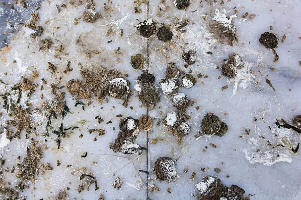

تنتشر مشكلة تراكم مخلفات الطيور فوق أسطح المباني والمناور الزجاجية في مدينة الرياض بشكل ملحوظ، خاصة في الأحياء القريبة من المساحات الخضراء أو المباني المرتفعة التي تتخذها الطيور مكاناً للتجمع والتعشيش. ومع تكرار هذه المشكلة، يبحث الكثير من الملاك ومديري العقارات عن شركة تنظيف مخلفات الطيور بالرياض تمتلك الخبرة الكافية للتعامل مع هذا النوع من التلوث دون التأثير على سلامة السطح أو المناور الزجاجية.
وتُعد المناور الزجاجية من أكثر عناصر المبنى تأثراً بتراكم مخلفات الطيور، نظراً لموقعها المكشوف واستقبالها المباشر لأشعة الشمس التي تجعل المخلفات تلتصق بالزجاج بشكل يصعب إزالته بالطرق التقليدية. ولهذا فإن التعاقد مع شركة تنظيف مناور بالرياض غير متخصصة قد يؤدي إلى خدوش دائمة في الزجاج أو عدم إزالة الآثار بشكل كامل، وهو ما يستدعي إعادة العمل من جديد وإهدار الوقت والتكلفة على صاحب العقار.
ومن هذا المنطلق، تقدم شركة حلول وتميز للتنظيف خدمة متكاملة ومتخصصة في تنظيف مخلفات الطيور والمناور الزجاجية بالرياض، بالاعتماد على فريق مدرب على التعامل مع هذا النوع من التلوث، ومحاليل معتمدة تزيل الآثار دون الإضرار بالزجاج أو الأسطح المحيطة به، بغض النظر عن مدة تراكم المخلفات أو كميتها.
وقد نفذت شركة حلول وتميز للتنظيف عدداً كبيراً من المشاريع الفعلية لتنظيف المناور وأسطح المباني السكنية والتجارية في مختلف أحياء الرياض، حيث حرص الفريق في كل مشروع على تقديم نتيجة نهائية تعيد للمناور شفافيتها الأصلية دون أي أضرار جانبية على الهيكل المحيط بها.
لماذا تتراكم مخلفات الطيور على المناور وأسطح المباني؟
تفضل الطيور التجمع فوق أسطح المباني والمناور الزجاجية نظراً لارتفاعها الآمن وابتعادها عن الحيوانات المفترسة، بالإضافة إلى وجود مساحات مسطحة مناسبة للراحة والتعشيش، وهو ما يجعل هذه المناطق عرضة لتراكم كميات كبيرة من المخلفات مع مرور الوقت إذا لم يتم التعامل معها بشكل دوري من قبل شركة تنظيف مخلفات الطيور بالرياض متخصصة.
كما أن المناور الزجاجية تحديداً تجذب الطيور بسبب انعكاس الضوء عليها، مما يجعلها منطقة جذب مستمرة تحتاج إلى متابعة دورية أكثر من غيرها من أجزاء المبنى، ولهذا تنصح شركة تنظيف مناور بالرياض بوضع برنامج صيانة منتظم بدلاً من الانتظار حتى تتفاقم المشكلة وتصبح أصعب في المعالجة.
ولهذا تحرص شركة حلول وتميز للتنظيف على تقديم استشارة أولية لكل عميل توضح له الأسباب المحتملة لتكرار المشكلة في موقعه تحديداً، سواء كانت متعلقة بموقع المبنى أو بوجود مصادر غذاء قريبة تجذب الطيور بشكل مستمر إلى السطح أو المنور.
- تراكم فضلات الطيور وبقايا الريش فوق سطح المنور الزجاجي
- ظهور بقع صفراء وبنية يصعب إزالتها بالماء العادي
- انسداد فتحات التصريف المحيطة بالمنور بمرور الوقت
- تعرض الزجاج لخدوش دقيقة نتيجة المحاولات غير المتخصصة للتنظيف
- انبعاث روائح غير مرغوبة عند تراكم المخلفات لفترات طويلة

تراكم مخلفات الطيور فوق سطح أحد المباني بالرياض قبل بدء أعمال التنظيف والتعقيم
المخاطر الصحية والإنشائية لتراكم مخلفات الطيور
لا تقتصر أضرار تراكم مخلفات الطيور على المظهر الجمالي فقط، بل تمتد لتشمل مخاطر صحية وإنشائية حقيقية تستدعي التدخل السريع من شركة تنظيف مخلفات الطيور بالرياض، خاصة في المباني السكنية التي يتردد عليها الأطفال وكبار السن بشكل يومي.
المخاطر الصحية
تحمل مخلفات الطيور في كثير من الأحيان أبواغ فطرية وبكتيريا يمكن أن تنتقل عبر الهواء عند جفاف المخلفات وتفتتها، مما قد يسبب مشكلات تنفسية لسكان المبنى إذا لم يتم التعامل مع المشكلة بشكل احترافي عبر شركة تنظيف مناور بالرياض متخصصة تمتلك معدات الحماية المناسبة لهذا النوع من الأعمال.
الأضرار الإنشائية
تحتوي مخلفات الطيور على مواد حمضية يمكن أن تتفاعل مع بعض خامات الأسطح والمناور مع مرور الوقت، مما يؤدي إلى تآكل تدريجي في السيليكون المحيط بالزجاج أو تلف طلاء الحديد المستخدم في هياكل المناور، ولهذا تركز شركة حلول وتميز للتنظيف على إزالة المخلفات في أقرب وقت ممكن لتجنب هذه الأضرار طويلة المدى.
انسداد أنظمة التصريف
يؤدي تراكم المخلفات مع بقايا الريش والأوراق إلى انسداد فتحات تصريف مياه الأمطار المحيطة بالمناور، وهو ما قد يتسبب في تسرب المياه إلى داخل المبنى خلال موسم الأمطار إذا لم يتم تنظيف هذه الفتحات بشكل دوري من قبل فريق متخصص.
خطوات تنفيذ خدمة تنظيف مخلفات الطيور والمناور
تعتمد شركة حلول وتميز للتنظيف على منهجية عمل واضحة عند تنفيذ مشاريع تنظيف المناور ومخلفات الطيور، بحيث يمر كل مشروع بعدة مراحل متتالية تضمن إزالة كاملة للمخلفات دون أي أضرار جانبية على الزجاج أو الهيكل المحيط به. وتشمل خطوات شركة تنظيف مناور بالرياض ما يلي:
- معاينة المنور أو السطح وتحديد كمية المخلفات ومدة تراكمها
- ارتداء فريق العمل لمعدات الحماية الشخصية المناسبة قبل البدء
- إزالة المخلفات الجافة يدوياً باستخدام أدوات مخصصة لا تخدش السطح
- استخدام محاليل معقمة لإزالة الآثار والبقع المتبقية على الزجاج
- تنظيف فتحات التصريف المحيطة بالمنور من أي انسدادات
- تعقيم كامل للمنطقة للقضاء على أي بكتيريا أو أبواغ متبقية
- فحص نهائي للتأكد من عدم وجود أي أضرار في الهيكل أو الزجاج
- تسليم الموقع نظيفاً بالكامل مع نصائح للوقاية من تكرار المشكلة
وتحرص شركة تنظيف مخلفات الطيور بالرياض التابعة لحلول وتميز على تنفيذ جميع هذه المراحل بدقة عالية، مع وجود مشرف ميداني مسؤول عن متابعة سير العمل للتأكد من الالتزام الكامل بمعايير السلامة والنظافة طوال فترة التنفيذ.
لماذا تعد حلول وتميز الخيار الأمثل لتنظيف المناور؟
تمتلك شركة حلول وتميز للتنظيف خبرة فعلية في التعامل مع مختلف أنواع المناور والأسطح المتأثرة بمخلفات الطيور، بدءاً من المناور الصغيرة في الفلل وحتى الأسطح الواسعة في المباني التجارية، وهو ما يجعلها من أبرز الخيارات لدى من يبحث عن شركة تنظيف مناور بالرياض ذات سجل واضح من المشاريع المنفذة سابقاً بنجاح.
تحرص شركة حلول وتميز للتنظيف على استخدام محاليل معتمدة وآمنة على الزجاج والمعادن المحيطة بالمناور، مع تجربة كل محلول على جزء صغير من السطح قبل التعميم، بما يضمن عدم حدوث أي تفاعل غير مرغوب مع خامة السطح المراد تنظيفه.
كما تعتمد شركة تنظيف مخلفات الطيور بالرياض التابعة لحلول وتميز على معدات رفع حديثة تتيح الوصول الآمن إلى المناور المرتفعة دون الحاجة إلى الدخول من داخل المبنى، مما يقلل من الفوضى ويحافظ على نظافة الأجزاء الداخلية أثناء التنفيذ.
ويعمل فريق حلول وتميز للتنظيف على مدار العام لتغطية احتياجات العملاء في مختلف أحياء الرياض، مع إمكانية التنسيق لعقود صيانة دورية تمنع تراكم المخلفات من جديد، بدلاً من الاقتصار على التنظيف لمرة واحدة فقط.
وتحرص شركة حلول وتميز للتنظيف كذلك على تقديم أسعار تنافسية وشفافة لجميع عملائها، مع إمكانية تقديم عرض سعر مفصل بعد المعاينة المجانية مباشرة، دون أي رسوم خفية أو التزامات مسبقة على العميل.
مناطق التغطية داخل مدينة الرياض
تغطي شركة تنظيف مناور بالرياض التابعة لحلول وتميز جميع أحياء ومناطق العاصمة الرياض دون استثناء، بحيث يمكن لأي عميل في أي موقع داخل المدينة طلب الخدمة والحصول على فريق عمل متكامل خلال وقت قصير من تاريخ التواصل الأول.
وسواء كان المنور في فيلا سكنية داخل حي هادئ أو في مبنى تجاري بأحد الشوارع الرئيسية، فإن شركة تنظيف مخلفات الطيور بالرياض التابعة لحلول وتميز قادرة على الوصول إليه وتنفيذ المشروع بنفس مستوى الجودة والاحترافية في جميع المواقع.
معايير اختيار شركة موثوقة لتنظيف المناور ومخلفات الطيور
قبل التعاقد مع أي جهة، ينبغي على أصحاب العقارات التأكد من عدة معايير أساسية تضمن اختيار شركة تنظيف مناور بالرياض تستحق الثقة فعلاً، وليس مجرد جهة تدعي الخبرة دون أي سجل حقيقي من المشاريع المنفذة سابقاً في هذا المجال تحديداً.
ومن أبرز هذه المعايير التأكد من امتلاك الشركة لمعدات حماية شخصية مناسبة، ومحاليل تنظيف آمنة على الزجاج، إلى جانب فريق مدرب فعلياً على التعامل مع مخلفات الطيور دون أي مخاطر صحية. وتلتزم شركة تنظيف مخلفات الطيور بالرياض التابعة لحلول وتميز بجميع هذه المعايير دون استثناء في كل مشروع.
كما يُنصح بطلب معاينة ميدانية مجانية قبل التعاقد، حيث تتيح شركة حلول وتميز للتنظيف لعملائها إمكانية طلب معاينة دقيقة للمنور أو السطح قبل تقديم عرض السعر النهائي، بما يضمن دقة العرض المقدم ومطابقته لطبيعة العمل الفعلية على أرض الواقع دون أي مفاجآت لاحقة بعد بدء التنفيذ.
ومن المهم أيضاً التأكد من وجود ضمان على جودة التنفيذ، بحيث تلتزم الشركة بإعادة أي جزء لم يصل إلى المستوى المطلوب دون أي تكلفة إضافية على العميل، وهو ما تحرص عليه شركة حلول وتميز للتنظيف في جميع مشاريعها بغض النظر عن حجمها أو موقعها.
نصائح للوقاية من تكرار تراكم مخلفات الطيور
توصي شركة تنظيف مخلفات الطيور بالرياض التابعة لحلول وتميز أصحاب العقارات بعدة نصائح عملية بعد انتهاء التنظيف، أهمها تركيب شبكات وقائية خفيفة فوق المناور المعرضة بشكل متكرر لتجمع الطيور، بما يمنع تكرار المشكلة دون التأثير على مظهر المبنى أو كمية الإضاءة الداخلية.
كما يُفضل إجراء فحص دوري كل بضعة أشهر للتأكد من عدم بدء تراكم جديد، حيث يساعد التدخل المبكر على تقليل تكلفة التنظيف بشكل كبير مقارنة بانتظار تراكم كميات كبيرة من المخلفات لفترات طويلة قبل التعامل معها من قبل شركة تنظيف مناور بالرياض متخصصة.
ومن النصائح المهمة أيضاً تجنب ترك مصادر غذاء مكشوفة بالقرب من السطح أو المنور، حيث تعمل شركة تنظيف مخلفات الطيور بالرياض التابعة لحلول وتميز على توعية العملاء بأهمية هذا الجانب كجزء من الحل طويل المدى وليس فقط التنظيف الفوري للمشكلة الحالية.
الفرق بين التنظيف العادي وتنظيف مخلفات الطيور المتخصص
رغم أن بعض الملاك يحاولون تنظيف مخلفات الطيور بأنفسهم باستخدام أدوات منزلية عادية، إلا أن هذه الطريقة غالباً ما تكون غير فعالة وقد تزيد المشكلة سوءاً، وهو ما يجعل التعامل مع شركة تنظيف مناور بالرياض متخصصة أمراً ضرورياً لضمان إزالة كاملة وآمنة للمخلفات والبقع المرتبطة بها.
كذلك تمتلك الشركات المتخصصة محاليل معقمة لا تتوفر في المنتجات المنزلية العادية، وهو ما تتميز به شركة تنظيف مخلفات الطيور بالرياض في التعامل مع الجانب الصحي من المشكلة وليس فقط إزالة الأثر المرئي للمخلفات عن سطح الزجاج أو المعدن.
وأخيراً، توفر الشركات المتخصصة معدات رفع وحماية تسمح بالوصول الآمن إلى المناور المرتفعة، وهو ما يميز فريق شركة حلول وتميز للتنظيف الذي يحرص دائماً على تنفيذ العمل بأعلى معايير السلامة المهنية دون أي مخاطرة على فريق العمل أو سكان المبنى.
أنواع المناور الأكثر عرضة لتراكم مخلفات الطيور
تختلف درجة تعرض المناور لتراكم مخلفات الطيور حسب موقعها وتصميمها المعماري، وتراعي شركة تنظيف مناور بالرياض هذا الاختلاف عند وضع خطة الصيانة المناسبة لكل نوع من أنواع المناور المنتشرة في مباني الرياض.
المناور الأفقية المسطحة
تعتبر المناور الأفقية المسطحة الأكثر عرضة لتجمع الطيور نظراً لسهولة الوقوف عليها، ولهذا تحتاج إلى متابعة دورية أكثر تكراراً من قبل شركة تنظيف مخلفات الطيور بالرياض مقارنة بالأنواع الأخرى من المناور المائلة أو القبابية.
المناور القبابية المرتفعة
تحتاج المناور القبابية المرتفعة إلى معدات رفع متخصصة للوصول إليها بأمان، وهو ما يوفره فريق شركة حلول وتميز للتنظيف من خلال رافعات هيدروليكية مناسبة لهذا النوع من الارتفاعات دون الحاجة إلى مخاطرة غير ضرورية أثناء التنفيذ.
وبغض النظر عن نوع المنور أو ارتفاعه، تلتزم شركة تنظيف مناور بالرياض التابعة لحلول وتميز بتقديم نفس مستوى الجودة والدقة في كل مشروع، مع تكييف أسلوب العمل بما يتناسب مع طبيعة كل موقع على حدة.
تكلفة خدمة تنظيف المناور ومخلفات الطيور
تختلف تكلفة الخدمة حسب عدة عوامل، أبرزها مساحة المنور وارتفاعه وكمية المخلفات المتراكمة ومدى صعوبة الوصول إليه، ولهذا تحرص شركة تنظيف مخلفات الطيور بالرياض على تقديم عرض سعر دقيق بعد المعاينة الميدانية بدلاً من تحديد سعر ثابت دون معرفة تفاصيل الموقع الفعلية.
وتسعى شركة حلول وتميز للتنظيف دائماً إلى تقديم أسعار عادلة تتناسب مع حجم العمل الفعلي، مع تجنب أي رسوم إضافية غير متوقعة بعد بدء التنفيذ، بما يمنح العميل شفافية كاملة في التعامل من البداية وحتى تسليم المشروع.
كما تتيح شركة تنظيف مناور بالرياض التابعة لحلول وتميز خصومات خاصة على عقود الصيانة الدورية مقارنة بالزيارة الواحدة، بما يشجع العملاء على الانتقال إلى نظام الصيانة المستمرة بدلاً من التعامل مع المشكلة بعد تفاقمها في كل مرة.
أهمية التعامل السريع مع مشكلة مخلفات الطيور
كلما تأخر التعامل مع مشكلة تراكم مخلفات الطيور، زادت صعوبة إزالتها وارتفعت تكلفة المعالجة، ولهذا تنصح شركة تنظيف مناور بالرياض بعدم الانتظار حتى تتفاقم المشكلة، بل التواصل الفوري عند ملاحظة أولى علامات التراكم فوق المنور أو السطح.
فالمخلفات الطازجة أسهل بكثير في الإزالة مقارنة بالمخلفات الجافة المتراكمة لفترات طويلة، وهو ما تراعيه شركة تنظيف مخلفات الطيور بالرياض عند تحديد أولوية الاستجابة لطلبات العملاء، خاصة في الحالات التي تتطلب تدخلاً سريعاً لتجنب تفاقم الأضرار الإنشائية المحتملة.
ولهذا توفر شركة حلول وتميز للتنظيف خط تواصل سريع لاستقبال طلبات الصيانة الطارئة، مع إمكانية إرسال فريق عمل خلال وقت قصير من التواصل الأول في الحالات التي تستدعي تدخلاً عاجلاً لحماية المبنى من أي أضرار إضافية.
وفي المقابل، فإن العملاء الذين يتعاملون مع شركة تنظيف مناور بالرياض بشكل دوري ومنتظم يوفرون على أنفسهم الكثير من الوقت والتكلفة على المدى الطويل، مقارنة بمن ينتظرون حتى تصبح المشكلة كبيرة ومعقدة قبل طلب المساعدة المتخصصة.
خدمات إضافية تكمل تنظيف المناور ومخلفات الطيور
بالإضافة إلى تنظيف مخلفات الطيور، تقدم شركة حلول وتميز للتنظيف مجموعة من الخدمات المكملة التي قد يحتاجها العميل بعد الانتهاء من تنظيف المنور، مثل تلميع الزجاج الخارجي وتنظيف الأسطح المحيطة بالكامل، بما يمنح المبنى مظهراً موحداً ونظيفاً من جميع الجهات.
كما يمكن لفريق شركة تنظيف مخلفات الطيور بالرياض التابعة لحلول وتميز فحص حالة السيليكون والعوازل المحيطة بالمنور أثناء التنفيذ، وتنبيه العميل في حال وجود أي أضرار مبكرة تحتاج إلى صيانة إضافية قبل أن تتفاقم مع مرور الوقت وتزيد التكلفة لاحقاً.
وتحرص الشركة على تقديم هذه الملاحظات دون أي مقابل إضافي كجزء من التزامها تجاه العميل، بهدف بناء علاقة عمل طويلة الأمد مبنية على الثقة والشفافية الكاملة في كل مرحلة من مراحل التعامل مع صيانة المبنى وواجهاته ومناوره على حد سواء.
العناية بالمناور بعد التنظيف مباشرة
بعد الانتهاء من عملية التنظيف الأساسية، يُنصح بمتابعة حالة المنور بشكل بصري كل فترة قصيرة، خاصة في مواسم هجرة الطيور أو الفصول التي يزداد فيها نشاطها بشكل ملحوظ في مدينة الرياض، بما يساعد على اكتشاف أي تراكم جديد في مرحلة مبكرة قبل أن يتفاقم مرة أخرى.
كما يُفضل الاحتفاظ بمعلومات التواصل مع فريق الصيانة المتخصص لطلب زيارة سريعة عند الحاجة، بدلاً من محاولة التعامل مع المشكلة بأدوات غير مناسبة قد تؤثر سلباً على جودة السطح أو الزجاج المحيط بالمنور على المدى الطويل.
وتبقى العناية المستمرة بالمنور أحد أهم عوامل الحفاظ على مظهر المبنى بشكل عام، نظراً لكون المنور غالباً ما يكون في موقع مرئي وواضح من الداخل والخارج على حد سواء، مما يجعل أي إهمال في نظافته ظاهراً بسرعة لجميع سكان أو مرتادي المبنى.
الأسئلة الشائعة حول تنظيف مخلفات الطيور والمناور
وفي الختام، يبقى اختيار شركة تنظيف مناور بالرياض ذات خبرة فعلية وسجل واضح هو الضمان الحقيقي لنجاح أي مشروع تنظيف لمخلفات الطيور، بعيداً عن أي مخاطر قد تنتج عن التعامل مع عمالة غير متخصصة أو غير مؤهلة لهذا النوع من المشكلات التي تحتاج دقة عالية في كل تفصيلة من تفاصيل التنفيذ. كما أن التعامل مع شركة تنظيف مناور بالرياض ذات سمعة موثقة يوفر على صاحب العقار عناء البحث المتكرر عن جهة تنفيذ جديدة في كل مرة تتكرر فيها المشكلة.
وتواصل شركة حلول وتميز للتنظيف تطوير أساليب عملها باستمرار بما يتناسب مع أحدث المعايير المعتمدة في تنظيف المناور ومعالجة مخلفات الطيور، بهدف تقديم تجربة متكاملة تجمع بين الجودة والاحترافية والالتزام الكامل بالمواعيد مع كل عميل، بغض النظر عن حجم المشروع أو مدته الزمنية. ويحرص فريق حلول وتميز للتنظيف على الاستماع لملاحظات كل عميل بعد انتهاء المشروع.
ويظل التواصل المباشر مع فريق شركة تنظيف مخلفات الطيور بالرياض الطريقة الأسرع للحصول على معاينة ميدانية دقيقة وعرض سعر مفصل يناسب طبيعة المنور أو السطح المطلوب تنظيفه، سواء عبر الاتصال الهاتفي المباشر أو عبر خدمة الواتساب المتاحة على مدار الأسبوع لجميع سكان الرياض.
وبفضل الخبرة المتراكمة في التعامل مع مختلف أنواع المناور والأسطح، أصبحت شركة تنظيف مخلفات الطيور بالرياض التابعة لحلول وتميز من الأسماء الموثوقة لدى عدد كبير من الملاك وشركات إدارة العقارات داخل الرياض، وهو ما يعكس مستوى الثقة المتبادلة بين الطرفين على مدار سنوات من التعاون المستمر.
وفي النهاية، يمثل التعاقد مع شركة حلول وتميز للتنظيف خطوة عملية تحافظ على قيمة العقار ومظهره الجمالي، وتضمن في الوقت ذاته بيئة صحية آمنة لسكان المبنى من خلال برنامج صيانة دوري مدروس يتناسب مع طبيعة كل موقع وحجم المشكلة فيه.
وباختصار، فإن أي عميل يبحث عن شركة تنظيف مناور بالرياض موثوقة يمكنه الاعتماد على شركة تنظيف مخلفات الطيور بالرياض التابعة لحلول وتميز بثقة كاملة، سواء لمشروع تنظيف لمرة واحدة أو لعقد صيانة دورية طويل الأمد يغطي احتياجات العقار على مدار العام بالكامل دون أي انقطاع في مستوى الخدمة.
ويبقى فريق شركة حلول وتميز للتنظيف على استعداد دائم للرد على أي استفسار يتعلق بتنظيف المناور أو مخلفات الطيور، مع تقديم استشارة مجانية مبدئية توضح أفضل الحلول المناسبة لكل حالة على حدة قبل اتخاذ قرار التعاقد النهائي.